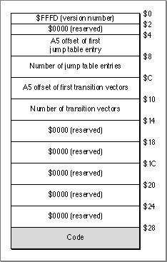

The Segment Header
Each CFM-68K runtime segment contains a header that gives information about the segment. Figure 9-1 shows the structure of a CFM-68K runtime segment header.Figure 9-1 Structure of a CFM-68K runtime segment header
- Note
- The CFM-68K runtime segment header is the same size as a classic 68K far model (32-bit everything) header (see Figure 10-11 (page 10-24)), but it contains different information. u


The version number $FFFD indicates that the segment header was built for the CFM-68K runtime architecture. This value must match the version number in the jump table flag entry (see Figure 9-2 (page 9-5)).
- Note
- In MPW you must build your application with the same size constraints as a classic 68K near model program unless you specify the
-bigsegcompiler option.